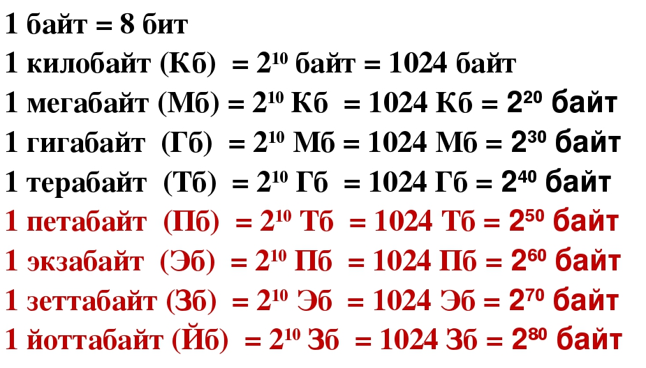

Лекция на тему "Информатика и его базовая основа."
Давайте сперва изучим, что такое информатика.
Информатика - это наука о методах и средствах сбора, хранения, обработки, передачи и анализа информации с использованием компьютерных технологий. В англоязычных странах эта дисциплина называется Computer Science (компьютерная наука).
Сегодня мы поверхностно разберем несколько очень легких но важных тем в информатике.
- Система счисления
- Логические операции
- Единицы измерения информации
Самая первая тема которую мы сегодня изучим - это Система счисления.
У многих может возникнуть вопрос, что это такое?
Система счисления - это набор правил и символов для записи и представления чисел. Она позволяет однозначно выражать количества и выполнять арифметические действия.
Какие виды системы счисления существуют в компьютерном мире?
- Двоичная.
- Система на основе цифр 0 и 1. На ней построена работа всех компьютеров и цифровых устройств (где 0 — это отсутствие сигнала, а 1 — наличие).
- Десятичная.
- Система на основе цифр от 0 до 9. Это самая привычная система для человека, появившаяся из-за счета по пальцам рук.
- Восьмиричная.
- Цифры от 0 до 7.
- Шестнадцатеричная.
- Система на основе цифр от 0 до 9 и латинские буквы от A до F (где A=10, B=11, …, F=15). Часто используется в программировании для компактной записи двоичного кода и цветов (например, в веб-дизайне).
Как будет выглядеть цифра 255 в разных системах счисления.
| Двоичная |
Десятичная |
Восьмиричная |
Шестнадцатеричная |
| 111111112 |
25510 |
3778 |
FF16 |
Следующая в очереди у нас - это Логические операции.
Логические операции — это действия над логическими величинами (высказываниями, битами или булевыми значениями), в результате которых получается новое логическое значение: истина (1 или true) либо ложь (0 или false).
Всего есть 6 видов логических операций.
- Отрицание (инверсия / NOT)
- Конъюнкция (логическое умножение / AND)
- Дизъюнкция (логическое сложение / OR)
- Исключающее ИЛИ (XOR)
- Импликация (логическое следование)
- Эквивалентность (равнозначность)
Обозначения каждой логической операции
| Логическая операция: |
Отрицание |
Конъюнкция |
Дизъюнкция |
Исключающее |
Импликация |
Эквивалентность |
| Обозначения: |
НЕ; not; ¬; ! |
И; and; &; ∧ |
ИЛИ; or; +; ∨ |
XOR; ^ |
=>; -> |
==; iff |
Последняя на сегодня тема - это Единицы измерения информации.
Единицы измерения информации — это величины, которые используют для определения объёма данных в памяти компьютера, на накопителях (флешках, жестких дисках) или при передаче через сети.
Основными единицами измерения являются
Давайте поглубже изучим, что такое Бит и Байт.
Бит (bit) - это минимальная и самая маленькая единица измерения информации. Она может принимать только одно из двух значений: 0 или 1 (двоичный код).
Байт (byte) — основная единица измерения, которая состоит из 8 бит. Одного байта обычно хватает для хранения одного символа текста (например, буквы или цифры).
Список всех единиц измерений

На этом наша мини-лекция подходит к концу. Спасибо всем за внимание.